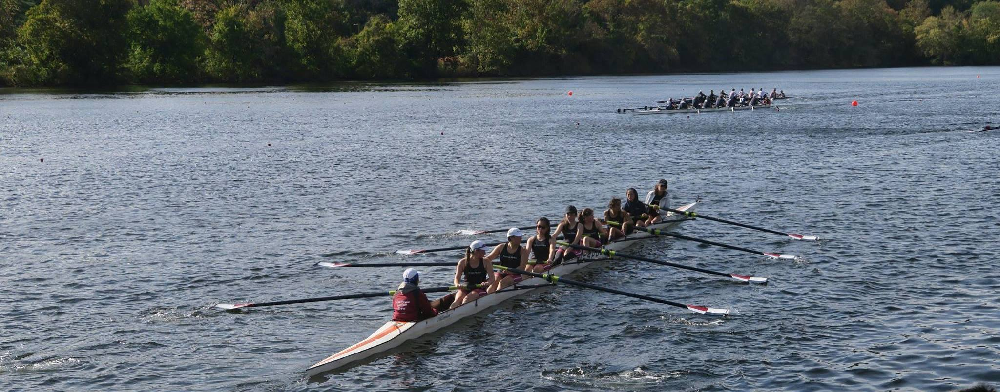

CMU Rowing Club 2017 Fall Race Results
-
Central Catholic Biathlon (Pittsburgh, PA)
Event Lineup Result Men Vinay Mitta 4th 1h 18m 36s (10,000 meter erg Nick Jones 8th 1h 21m 30s & 6 mile run) Vishnu Raghavan 16th 1h 25m 54s Women Justine Olshan 3rd 1h 17m 50s (7,500 meter erg Sandy Sun 6th 1h 18m 43s & 6 mile run) Sandra Ho 9th 1h 20m 19 -
Head of the Occoquan (Fairfax Station, VA)
Event Lineup Result Women's Lightweight 1x Sandra Ho 4th 26:40.53 Collegiate Men's 8+ Vinay Mitta, Jacob Fondriest, Eric Peet, Nikolai Flowers, Peter Espenshade, Nothani Bryant, Tony Lu, Max Perry; Erin Kavanagh 12th 17:37.72 Collegiate Women's 8+ Sandy Sun, Cheyenne Bell, Marissa Engle, Sophie Breedlove, Nicole Matis, Brenda Mittelbuscher, Justine Olshan, Sarah Simon; Gillian Nolan 16th 19:59.25 Frosh Novice Men's 4+ Vishnu Raghavan, Nick Jones, Alex Noring, Hugh Cheon; Julian Tutuncu-Macias 3rd 20:53.43 Frosh Novice Women's 4+ Heather Baker, Tabatha Pina, Ellen Zhu, Kaylyn Clairmont; Jenny Son 11th 25:23.49 Frosh Novice Men's 8+ Vishnu Raghavan, Joshua Bas, Kevin Bender, Austin Goetz, Jespar Chen, Michael Huang, Andrew Yang, Paul Riofrío; Olivia Deng 10th 20:29.60 Men's Collegiate 4+ Vinay Mitta, Eric Peet, Peter Espenshade, Jacob Fondriest; Jenny Son 12th 18:49.14 Men's Collegiate 4+ Nothani Bryant, Nikolai Flowers, Tony Lu, Max Perry; Julian Tutuncu-Macias 19th 20:06.18 Women's Collegiate 4+ Sandy Sun, Marissa Engle, Nicole Matis, Sandra Ho; Gillian Nolan 5th 20:40.51 Women's Collegiate 4+ Isabel Joyce, Cheyenne Bell, Sophie Breedlove, Mabel Bartlett; Erin Kavanagh 10th 21:37.30 -
Head of the Charles (Cambridge, MA)
Event Lineup Result Men's Collegiate Fours Vinay Mitta, Eric Peet, Peter Espenshade, Jacob Fondriest; Jenny Son 30th 17:32.304 Women's Collegiate Fours Sandy Sun, Marissa Engle, Nicole Matis, Sandra Ho; Gillian Nolan 25th 19:37.598 -
Head of the Ohio (Pittsburgh, PA)
Event Lineup Result Women's Open Ltwt 1x Sandra Ho 1st 20:07.1 Men's Open 4+ Vinay Mitta, Eric Peet, Peter Espenshade, Jacob Fondriest; Jenny Son 3rd 14:27.0 Men's Open 4+ (Alumni) Scott, Dmitriy Yakubov, Brendan White, Josh Harvey; Rand Burzese 11th 16:11.6 Women's Open 8+ Sandy Sun, Nicole Matis, Marissa Engle, Cheyenne Bell, Isabel Joyce, Allison Chu, Alexis Hoane, Sarah Simon; Gillian Nolan 6th 15:57.2 Men's Novice 8+ Alex Noring, Nick Jones, Kevin Bender, Austin Goetz, Vishnu Raghavan, Joshua Bas, David Chen, Eu Jing Jing; Erin Kavanagh 4th 16:19.9 Mixed Masters 8+ Brendan White, Dmitriy Yakubov, Josh Harvey, Will Milner, Isa Daher, Julia Embody, Laura Caton, Shreya Gupta; Rand Burzese 1st 16:29.3 Women's Novice 4+ Sophie Breedlove, Kaylyn Clairmont, Heather Baker, Mabel Bartlett; Jenny Son 4th 18:43.4 Men's Open 2- Vinay Mitta, Nikolai Flowers 3rd 16:40.8 Men's Open 2- Peter Espenshade, Eric Peet 4th 16:43.5 Women's Open 2x Isabel Joyce, Marissa Engle 3rd 20:07.2 Women's Open 4+ Sandy Sun, Nicole Matis, Marissa Engle, Sandra Ho; Gillian Nolan 2nd 16:51.8 Women's Open 4+ (Alumni) Laura Caton, Ali McNulty, Julia Embody, Shreya Gupta; Rand Burzese 15th 18:51.7 Women's Open 4+ Isabel Joyce, Mabel Bartlett, Justine Olshan, Brenda Mittelbuscher; Jenny Son 16th 18:58.2 Men's Open 8+ Vinay Mitta, Jacob Fondriest, Eric Peet, Nikolai Flowers, Peter Espenshade, Nothani Bryant, Tony Lu, Max Perry; Erin Kavanagh 5th 14:30.5 Women's Novice 8+ Sophie Breedlove, Kaylyn Clairmont, Heather Baker, Tabatha Pina, Ellen Zhu, Molly Flanagan, Olivia Deng, Min Yan; Christine Shen 7th 19:56.9